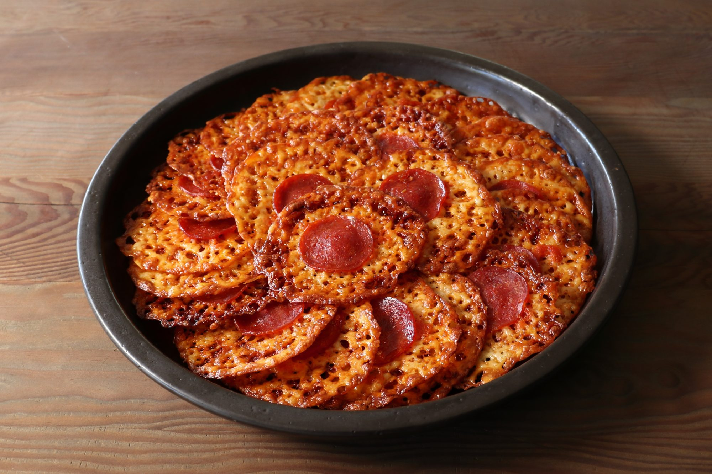

Pepperoni Pizza Cheese Drip Chips

Instead of ordering pizza for your next party, wow your guests with these crispy, caramelized, pizza-flavored cheese chips! Since everybody agrees that the best parts of a pizza are those spots where the cheese sort of drips off and caramelizes onto the pan, getting crispy, crusty, and incredibly delicious, I took those cheesy drips and made chips! Serve as-is or top with a bit of baby arugula and fold in half to eat like tacos.
Ingredients
- 4 ounces low-moisture mozzarella cheese
- 4 ounces provolone cheese
- 2 ounces Parmigiano-Reggiano cheese
- 1/2 cup prepared pizza sauce
- 30 slices pepperoni
Directions
- Preheat the oven to 400 degrees F (200 degrees C). Line a 13x18-inch, half-sheet pan with parchment paper.
- Grate provolone and mozzarella cheeses with the larger side of a box grater into a large bowl. Use the smaller side and grate in Parmigiano-Reggiano cheese. Toss with your hands to combine.
- Scoop tablespoonfuls of the cheese mixture into 12 circular piles on the prepared baking sheet, making sure you're getting all three cheeses in each scoop. Top each circle with about ¾ teaspoon pizza sauce, then place a slice of pepperoni on top.
- Bake in the center of the preheated oven until melted and sizzling, 12 to 15 minutes.
- Remove parchment paper and chips to a wire rack to cool. Line the baking sheet with a fresh sheet of parchment paper.
- Repeat Steps 3 to 5 to bake remaining 18 chips.
- Let chips cool to room temperature, 15 to 20 minutes. Remove from the parchment paper and serve.